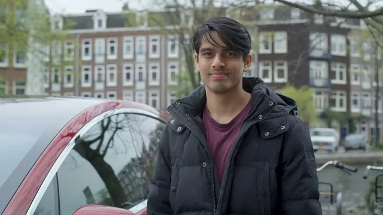
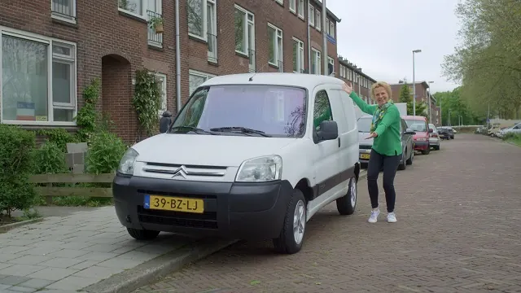
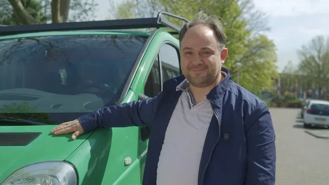

Ontdek Nijmegen door de ogen van een local
Gepubliceerd op 11 oktober 2022, bijgewerkt op 21 oktober 2026

Nijmegen is mijn favoriete stad in Nederland. De prachtige huizen, gezellige mensen en het historische stadscentrum: beter kan het niet. Als student verhuisde ik, Renske, naar Nijmegen. In de laatste jaren heb ik heel wat mogen ontdekken in de stad zelf én de prachtige omgeving. Vaak trek ik er in het weekend een dag op uit omdat de omgeving Nijmegen enorm veel te bieden heeft. Met heel wat uitstapjes op zak deel ik graag mijn tips voor een heerlijke dag weg!
Even vervoer regelen
Het is weer weekend. Hoog tijd om de rugzak in te pakken en leuke dingen te ondernemen. Omdat alles in Nijmegen goed bereikbaar is met de fiets of met het openbaar vervoer, beschik ik niet over een eigen auto. Ik heb er niet vaak een nodig en dan zijn de maandelijkse autokosten het me niet waard. Gelukkig is een auto huren in Nijmegen voordelig en zo gepiept.
Heb je ook geen auto? De dagen dat ik een auto nodig heb, maak ik gebruik van autodeelplatform SnappCar. Op dit platform verhuren onder andere Nijmegenaren hun auto. Hartstikke handig: er staat er altijd eentje bij mij in de buurt en ik kan kiezen uit een groot aanbod gevarieerde auto’s. M’n favoriet? De Mini Cooper van de buurvrouw! Een echte aanrader.
Meestal kies ik voor een auto met de Keyless optie. Dit betekent dat ik de auto met de app kan openen en de sleutels al in de auto liggen. Zo hoef ik niet af te spreken met de verhuurder en kan ik direct vertrekken. Ga je met een grotere groep een dagje op pad en is een stadsauto te klein? Dan is een busje de oplossing. Ook voor een busje huren in Nijmegen kun je bij SnappCar terecht. Heb je een auto geregeld? Dan kunnen we eropuit!

Naar de natuur in Kerkendom
Als je het mij vraagt bestaat het ideale dagje weg uit een afwisseling van natuur en rust, maar ook lekker eten en leuke dingen zien. Daarom rijden we deze ochtend naar het idyllische Kekerdom. Een klein dorpje van nog geen 500 inwoners op een half uurtje rijden van Nijmegen.
De route alleen al is prachtig om te zien: groene weilanden, de poldernatuur en rivieren. Er is weinig bebouwing en dat is lekker verfrissend wanneer je in een stad woont. Mijn tip? Parkeer de auto bij het kerkje in Kekerdom en bewonder het dorp tijdens een korte wandeling.
Kekerdom grenst aan het natuurgebied Millingerwaard waar onze route vervolgt. We lopen een route van 2,5 kilometer met prachtige natuur en wilde dieren, om vervolgens te eindigen bij de Millinger Theetuin. Een oase van rust waar je de mooiste bloemen en planten kunt bewonderen en vervolgens neer kunt strijken voor een hapje eten of, hoe kan het ook anders, de lekkerste thee. Wil je er wat langer zitten? Dan is de high tea een echte aanrader! Na een rustpauze is het tijd om terug te wandelen naar de auto, want er staat nog meer op de planning vandaag.
We vervolgen de route en gaan weer richting Nijmegen. Dit keer stoppen we in Berg en Dal, waar je nogmaals prachtige, heuvelige landschappen ziet. Heb je nog niet bij de theetuin gegeten? Dan is het pannenkoekenrestaurant De Duivelsberg dé uitgelezen plek in het bos om te genieten van een heerlijke pannenkoek.

Bezoek interessante musea
Mocht je nog niet moe zijn, dan zijn er ook in dit gebied weer mooie wandelroutes. Genoeg van al het wandelen? Dan gooien we het over een andere boeg. Als museumliefhebber raak je in deze omgeving niet snel verveeld. Er zijn in omgeving Nijmegen namelijk tal van musea te bezoeken die écht de moeite waard zijn. In Groesbeek ligt bijvoorbeeld het Vrijheidsmuseum, waar je de verhalen van de Tweede Wereldoorlog en de bevrijding van de regio beleeft.
Ben je juist meer geïnteresseerd in de geschiedenis van Nederland en specifiek de Tweede Wereldoorlog? Op 6 minuten rijden van Berg en Dal ligt het Vrijheidsmuseum in Groesbeek. Op steenworp afstand van Duitsland, had het dorp een belangrijke ligging in de oorlog en in het museum leer je meer over deze tijd. Een belangrijke geschiedenis die we niet mogen vergeten.
Hét wijndorp van Nederland
Zelf ben ik fan van musea, maar ik kan me voorstellen dat niet iedereen de behoefte heeft om een bezoek te brengen aan een museum. Daarom geef ik je graag nog een andere plek waar ik al meerdere keren ben geweest: Groesbeek.
Wie zegt dat je helemaal naar Bordeaux of de Champagnestreek moet gaan om wijngaarden te bezichtigen, heeft het mis. In niets minder dan Groesbeek vind je meerdere prachtige wijngaarden. Niet gek dat Groesbeek dan ook is omgedoopt tot het ‘wijndorp van Nederland’. Een bezoekje brengen is absoluut een must. Bezoek het Nederlands Wijnbouwcentrum waar de wijn wordt gemaakt en wandel langs de verschillende wijngaarden. Sluit af met een wijnproeverij en vergeet niet om de BOB van een lekker alcoholvrij drankje te voorzien.
Terug naar het mooie Nijmegen
Om de dag lekker af te sluiten, rijden we terug naar Nijmegen en parkeren we de auto volgetankt op de afgesproken plaats. Aangezien we een Keyless auto hebben geboekt, kunnen we de sleutels gewoon in de auto laten liggen en sluiten we hem met de app. We sturen de verhuurder nog even een berichtje om te bedanken voor de auto en that’s it. Handig!
Nu we weer terug in Nijmegen zijn, is het tijd voor een afsluitend drankje. Mijn favoriete plekken voor een drankje? Het terras van De Hemel, de Waal of zoek de gezelligheid op bij de Grote Markt. We kunnen terugkijken op een geslaagde dag vol natuur, gezelligheid en nieuwe indrukken!